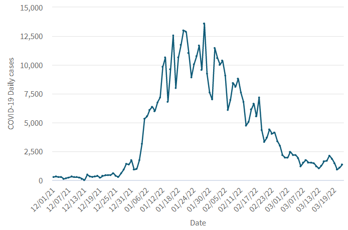
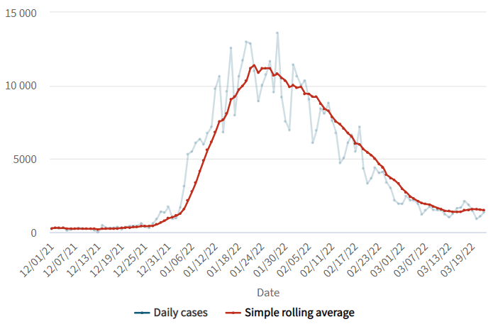
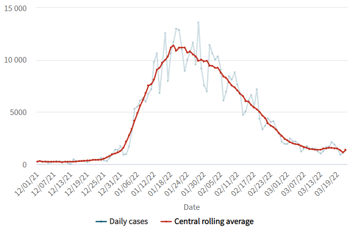
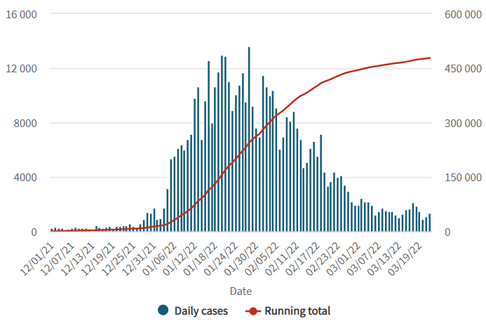
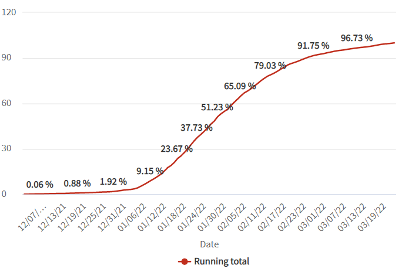
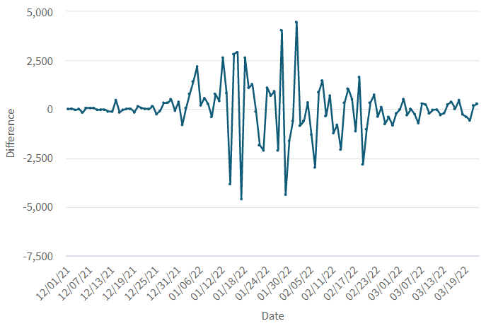

Understanding how the past affects the future is a key skill for data analysts and business owners, which is why it may pay to have historical data analysis methods at hand. These methods use historical data to help you understand how past events developed and, maybe, to project future events. In this article, you will see how to solve different scenarios to analyze data trends, evolution, and changes using query objects.
Consider a chart like the following:

The chart above represents the daily COVID-19 cases during the wave of the Omicron variant in Uruguay. As you can see, the variability of the data is very high.
It would be very useful to "see" the trend behind all that noise. Since GeneXus 17 Upgrade 9, the Show values as property is available for any data element to make some calculation over the data after they are retrieved from the database. In this case, you need to perform a Simple Rolling Average; that is, take the average of the last 7 days, for example, and plot that information.
The result, shown next to the original data, is as follows:

The calculation takes into account the values from the past 7 days. That causes the variations in the average to be shifted in time rather than aligned with the variation in the data. This problem can be solved by calculating a Central Rolling Average that takes an equal number of data on either side of a central value. Through the Average type property you can choose from a set of variations to calculate the rolling average.

You can also widen the sample window to 14 days instead of only 7. To get that result, change the value in the Number of terms property.
Other variations include the Cumulative Rolling Average, which calculates the unweighted average of all the previous data points, or the weighted average that uses multiplying factors to give different weights to data at different positions in the sample window, with weights that decrease in arithmetical or exponential progression.
Another commonly used method to analyze a data series is to show not the individual values but the partial sum of the values up to the current one. This can also be accomplished through the Show values as property choosing Running total for that property.
In the following chart, the running total is plotted alongside the original data, using two y-axes because of the different scales of each measure.

You may also want to show the values as a percentage of the total value. To do that, set the Show as percentage property to Yes.

Sometimes you are interested not in the actual value but in the decrease or decrease from the previous value, or the first value of the series. You can get that result by choosing Difference in the Show values as property, and you will see the following result:

You can switch from comparing against the previous value to comparing against the first value of the series using the Difference from property, and also decide if you want the actual values or the change in percentage using the Show as percentage property.
Since GeneXus 17 Upgrade 9.
| Backlinks |
| Toc:Reporting in GeneXus |